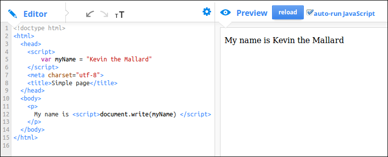
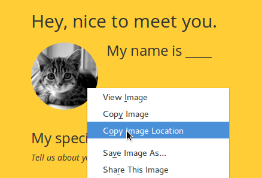
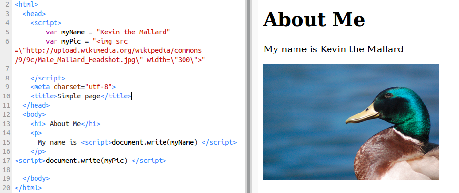

Hopefully you are good at following instructions because there is a mission to save a strawberry that needs people to pay careful attention.
Some instructions are tricky and you have to follow the steps exactly and in the right order. Writing web pages is a lot like this.
Watch the video on this page and find out more about sequences in text coding like Javascript.
If you would like to do an activity to explore the basic make up of an HTML page. There is one here called HTML Puzzle boxes.
15
min
Activity One - Use Javascript to create a simple about you page
Split learners into groups of 2 or individuals if there enough computers explain that we will use the console to find out more about how
numbers and maths are done in Javascript.
Change the value of variables in the code to create a simple page about you.
30
min
Exploring: Create your own series of instructions in a web page
Computer programming is all about creating a list of instructions that you follow exactly.
We call this list of instructions a sequence or an algorithm. When we put these sequences together they form a program.
Thimble is a tool that lets you create web pages online. You type in the code on the left and you can see the result as a web page on the right.
We used it when we remixed the About Me page in the above activity.
Now it is time to create your own page from scratch. It won't look as nice because we are not going to use the CSS code which was included in the last activities, but it will be all your own work and will really help you to understand how a page works.
Your name:
Your age:
The town where you live:
A picture of your town or favourite person:
How to create a sequence
To make a sequence you can create a list of variables at the top of the page. And then make a list of functions that write to the page using document.write() function.
To start with keep it very simple. A first step might look like this:

Keep building this up adding different variables and write functions to your page. Use this as a way to explore different HTML tags from the following resources.
IMG stands for Image and SRC is URL source. It is the source of the image on the internet. When you look for images
you can copy the image URL and paste it into your code. When you see an image you want you can right click it and choose Copy Image Location or Copy Image URL.

Be careful: If you are using Google Images, if what you copy and paste is very long and doesn't end with a jpg, gif or png then something is not right. When you are previewing images, click on View Image and try again.
Also be careful about quotation marks.
We tell javascript that our variable is a String by putting it in quotion marks. The danger is that if there are also quotatin marks in our string that we'll make an error. To avoid this we do a thing called escaping quotation marks that we want to keep inside our string and we do this by putting a \ infront of them. See the following image for an example.

5
min
Wrapping up - Why do this?
You may think why write a web page this way if we are only going to use the variables one after the other. If you asked that question you are right it does not seem to save us time and normally we would only use Javascript if it make this easier. But it does mean that we can move on to the next activity about making decisions in Javascript after we have learned the following things.
Web pages are a series of instructions that we write to the web browser screen including text and images.
We can write elements of web pages using variable containing data and functions.
We have to be very exact about the data and order we put them in for our sequences to work.
Sometimes we need to "escape" quotation marks if they are present inside String variables.